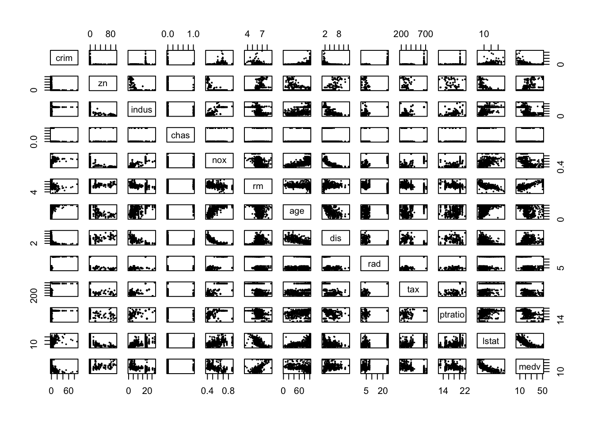
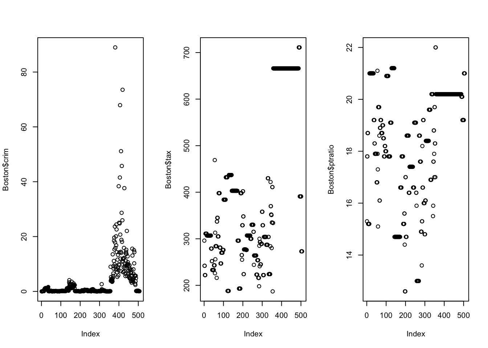
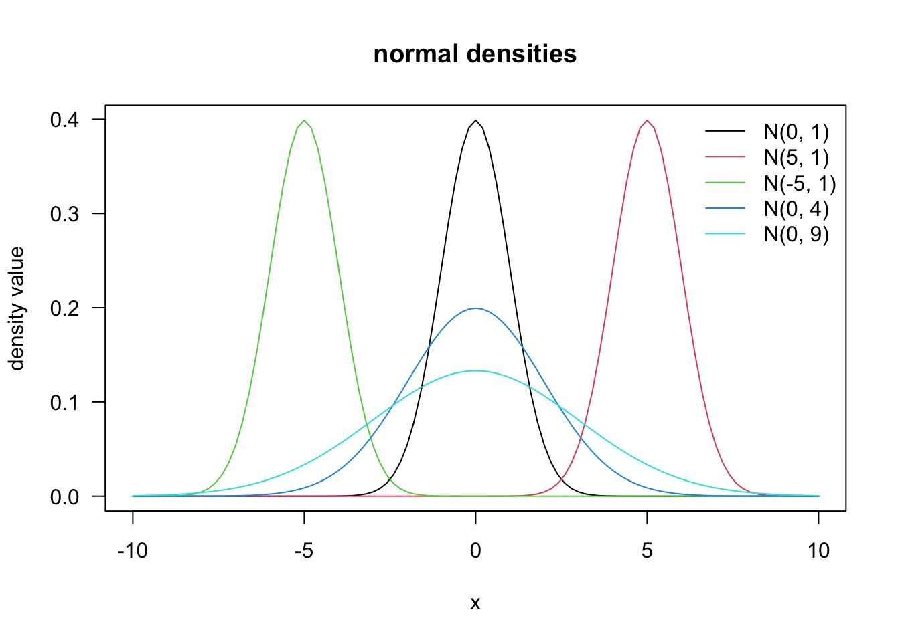
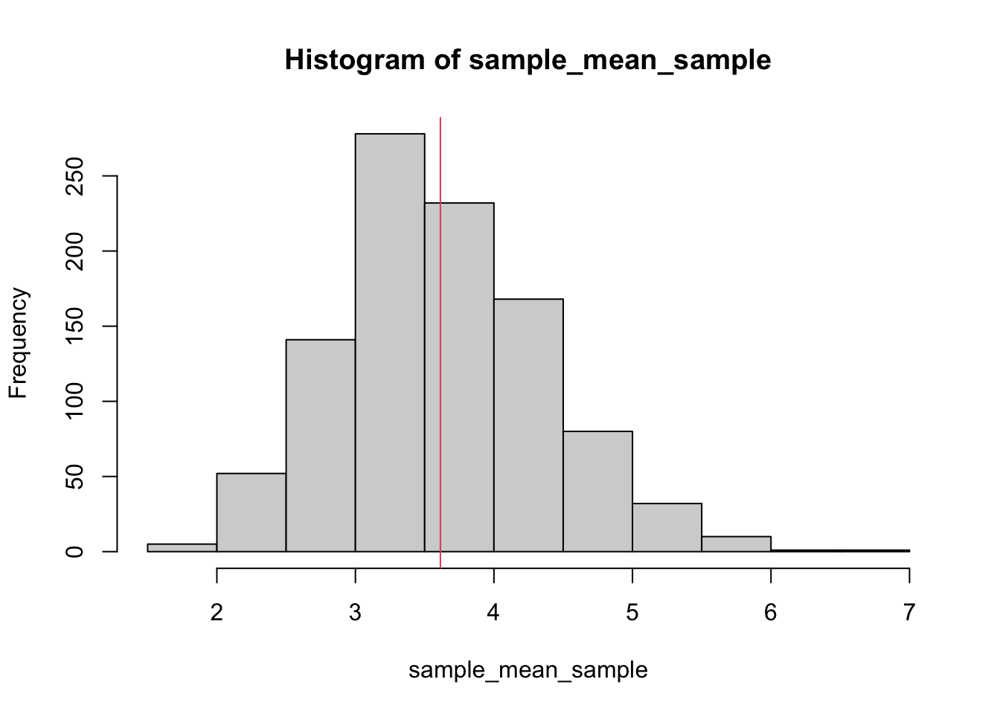

# i. CEO salary. inference. predictors: age, industry experience, industry,
# years of education. response: salary.
#
# ii. car part replacement. inference. response: life of car part. predictors: age
# of part, mileage used for, current amperage.
#
# iii. illness classification, prediction, response: age of death,
# input: current age, gender, resting heart rate, resting breath rate, mile run
# time.Exercise 1: Overview Solution
Note
Exercises are for practice purpose only.
Overview of Regression
- Describe three real-life applications in which regression might be useful. Describe the response, as well as the predictors. Is the goal of each application inference or prediction? Explain your answer.
- Describe the differences between a parametric and a non-parametric statistical learning approach.
# A parametric approach reduces the problem of estimating f down to one of
# estimating a set of parameters because it assumes a form for f.
#
# A non-parametric approach does not assume a functional form for f and so
# requires a very large number of observations to accurately estimate f.
#
# The advantages of a parametric approach to regression or classification are the
# simplifying of modeling f to a few parameters and not as many observations are
# required compared to a non-parametric approach.
#
# The disadvantages of a parametric approach to regression or classification
# are a potential to inaccurately estimate f if the form of f assumed is wrong or
# to overfit the observations if more flexible models are used.Checking Data with R
- Load in the
Bostondata set inISLR2package.
library(ISLR2)
data("Boston")- How many rows are in this data set? How many columns? What do the rows and columns represent?
dim(Boston)[1] 506 13?Boston- Make some pairwise scatterplots of the predictors (columns) in this data set. Describe your findings.
pairs(Boston, cex = 0.4, pch = 16)
- Are any of the predictors associated with per capita crime rate? If so, explain the relationship.
# check the pairs- Do any of the census tracts of Boston appear to have particularly high crime rates? Tax rates? Pupil-teacher ratios? Comment on the range of each predictor.
par(mfrow = c(1, 3))
plot(Boston$crim)
plot(Boston$tax)
plot(Boston$ptratio)
summary(Boston$crim) Min. 1st Qu. Median Mean 3rd Qu. Max.
0.00632 0.08204 0.25651 3.61352 3.67708 88.97620 summary(Boston$tax) Min. 1st Qu. Median Mean 3rd Qu. Max.
187.0 279.0 330.0 408.2 666.0 711.0 summary(Boston$ptratio) Min. 1st Qu. Median Mean 3rd Qu. Max.
12.60 17.40 19.05 18.46 20.20 22.00 - How many of the census tracts in this data set bound the Charles river?
sum(Boston$chas)[1] 35- What is the median pupil-teacher ratio among the towns in this data set?
median(Boston$ptratio)[1] 19.05- Which census tract of Boston has lowest median value of owneroccupied homes? What are the values of the other predictors for that census tract, and how do those values compare to the overall ranges for those predictors? Comment on your findings.
idx <- which(Boston$medv == min(Boston$medv))
Boston[idx, ] crim zn indus chas nox rm age dis rad tax ptratio lstat medv
399 38.3518 0 18.1 0 0.693 5.453 100 1.4896 24 666 20.2 30.59 5
406 67.9208 0 18.1 0 0.693 5.683 100 1.4254 24 666 20.2 22.98 5apply(Boston, 2, range) crim zn indus chas nox rm age dis rad tax ptratio lstat
[1,] 0.00632 0 0.46 0 0.385 3.561 2.9 1.1296 1 187 12.6 1.73
[2,] 88.97620 100 27.74 1 0.871 8.780 100.0 12.1265 24 711 22.0 37.97
medv
[1,] 5
[2,] 50- In this data set, how many of the census tracts average more than seven rooms per dwelling? More than eight rooms per dwelling? Comment on the census tracts that average more than eight rooms per dwelling.
sum(Boston$rm > 7)[1] 64sum(Boston$rm > 8)[1] 13summary(Boston) crim zn indus chas
Min. : 0.00632 Min. : 0.00 Min. : 0.46 Min. :0.00000
1st Qu.: 0.08205 1st Qu.: 0.00 1st Qu.: 5.19 1st Qu.:0.00000
Median : 0.25651 Median : 0.00 Median : 9.69 Median :0.00000
Mean : 3.61352 Mean : 11.36 Mean :11.14 Mean :0.06917
3rd Qu.: 3.67708 3rd Qu.: 12.50 3rd Qu.:18.10 3rd Qu.:0.00000
Max. :88.97620 Max. :100.00 Max. :27.74 Max. :1.00000
nox rm age dis
Min. :0.3850 Min. :3.561 Min. : 2.90 Min. : 1.130
1st Qu.:0.4490 1st Qu.:5.886 1st Qu.: 45.02 1st Qu.: 2.100
Median :0.5380 Median :6.208 Median : 77.50 Median : 3.207
Mean :0.5547 Mean :6.285 Mean : 68.57 Mean : 3.795
3rd Qu.:0.6240 3rd Qu.:6.623 3rd Qu.: 94.08 3rd Qu.: 5.188
Max. :0.8710 Max. :8.780 Max. :100.00 Max. :12.127
rad tax ptratio lstat
Min. : 1.000 Min. :187.0 Min. :12.60 Min. : 1.73
1st Qu.: 4.000 1st Qu.:279.0 1st Qu.:17.40 1st Qu.: 6.95
Median : 5.000 Median :330.0 Median :19.05 Median :11.36
Mean : 9.549 Mean :408.2 Mean :18.46 Mean :12.65
3rd Qu.:24.000 3rd Qu.:666.0 3rd Qu.:20.20 3rd Qu.:16.95
Max. :24.000 Max. :711.0 Max. :22.00 Max. :37.97
medv
Min. : 5.00
1st Qu.:17.02
Median :21.20
Mean :22.53
3rd Qu.:25.00
Max. :50.00 summary(subset(Boston,rm>8)) crim zn indus chas
Min. :0.02009 Min. : 0.00 Min. : 2.680 Min. :0.0000
1st Qu.:0.33147 1st Qu.: 0.00 1st Qu.: 3.970 1st Qu.:0.0000
Median :0.52014 Median : 0.00 Median : 6.200 Median :0.0000
Mean :0.71879 Mean :13.62 Mean : 7.078 Mean :0.1538
3rd Qu.:0.57834 3rd Qu.:20.00 3rd Qu.: 6.200 3rd Qu.:0.0000
Max. :3.47428 Max. :95.00 Max. :19.580 Max. :1.0000
nox rm age dis
Min. :0.4161 Min. :8.034 Min. : 8.40 Min. :1.801
1st Qu.:0.5040 1st Qu.:8.247 1st Qu.:70.40 1st Qu.:2.288
Median :0.5070 Median :8.297 Median :78.30 Median :2.894
Mean :0.5392 Mean :8.349 Mean :71.54 Mean :3.430
3rd Qu.:0.6050 3rd Qu.:8.398 3rd Qu.:86.50 3rd Qu.:3.652
Max. :0.7180 Max. :8.780 Max. :93.90 Max. :8.907
rad tax ptratio lstat medv
Min. : 2.000 Min. :224.0 Min. :13.00 Min. :2.47 Min. :21.9
1st Qu.: 5.000 1st Qu.:264.0 1st Qu.:14.70 1st Qu.:3.32 1st Qu.:41.7
Median : 7.000 Median :307.0 Median :17.40 Median :4.14 Median :48.3
Mean : 7.462 Mean :325.1 Mean :16.36 Mean :4.31 Mean :44.2
3rd Qu.: 8.000 3rd Qu.:307.0 3rd Qu.:17.40 3rd Qu.:5.12 3rd Qu.:50.0
Max. :24.000 Max. :666.0 Max. :20.20 Max. :7.44 Max. :50.0 Probability and Statistics
- Plot normal density curves with different choices of mean and standard deviation.
curve(dnorm(x, 0, 1), from = -10, to = 10, main = "normal densities",
ylab = "density value", las = 1)
curve(dnorm(x, 5, 1), col = 2, add = TRUE)
curve(dnorm(x, -5, 1), col = 3, add = TRUE)
curve(dnorm(x, 0, 2), col = 4, add = TRUE)
curve(dnorm(x, 0, 3), col = 5, add = TRUE)
legend("topright",
c("N(0, 1)", "N(5, 1)", "N(-5, 1)", "N(0, 4)", "N(0, 9)"),
col = 1:5, lty = 1, bty = "n")
- Choose a continuous variable in
Boston. Use thesample()function to draw a simple random sample of size 20 from this population. Calculate the sample average.
size <- 100
crim_sam <- sample(Boston$crim, size = size)
mean(crim_sam)[1] 4.743786- Repeat 2. several times to get a sampling distribution of the sample mean.
sample_mean_sample <- replicate(n = 1000, expr = mean(sample(Boston$crim, size = size)))
hist(sample_mean_sample)
abline(v = mean(Boston$crim), col = 2)